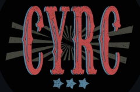

About Me / 個人資訊
羅郁翔
中原大學資訊管理系 | 大二
用邏輯思考，用音樂呼吸。
寫程式與彈吉他，看似一冷一熱，對我來說卻都是把抽象想法具象化的過程。在程式碼的世界裡，我享受抽絲剝繭、解決問題的成就感；抱起木吉他時，則習慣用旋律與節奏記錄生活。只要看見腦中的創意真正落地並產生價值，就是我持續前進的最大動力。
興趣
MY INTEREST
彈吉他
個人特質
PERSONAL TRAITS
- 邏輯分析
- 跨界實踐
PROFILE PICTURE
SKILLS & EXPERTISE / 我的技能
專業技能 PROFESSIONAL SKILLS
40%
Python
學習中
35%
Java
學習中
45%
Web Development
學習中
40%
Databases
學習中
40%
UI Design
學習中
軟實力 SOFT SKILLS
Soft Skills & Badges
GitAgileDesignUXFigma
溝通表達90%
團隊合作85%
問題解決80%
活動企劃75%
項目管理88%
EXPERIENCE & PROJECTS
聯絡資訊 CONTACT
歡迎透過以下方式與我聯繫，或點擊「聯絡我」留下訊息。